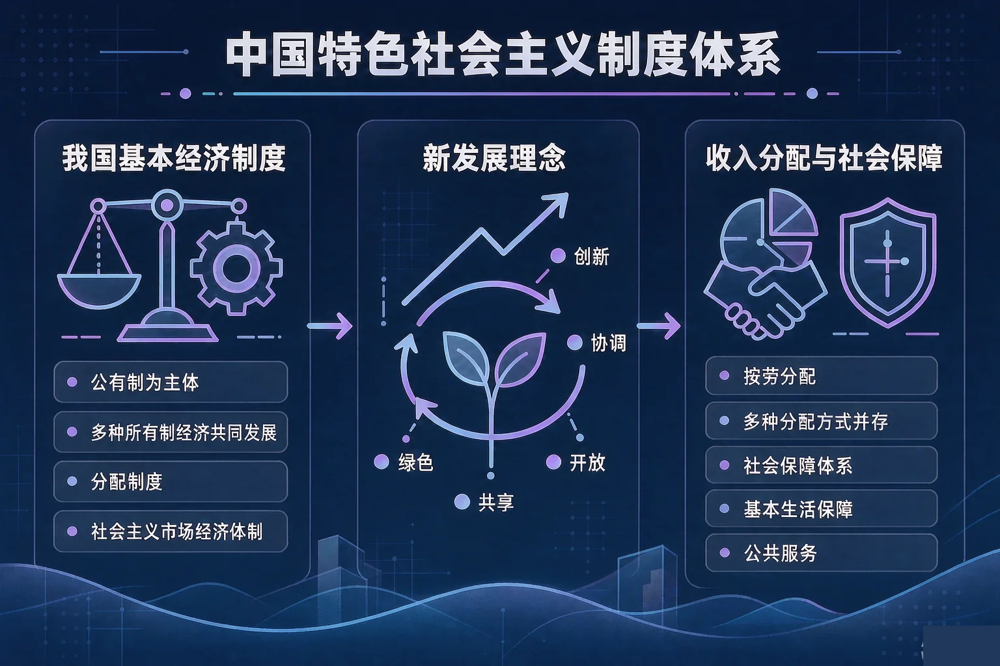
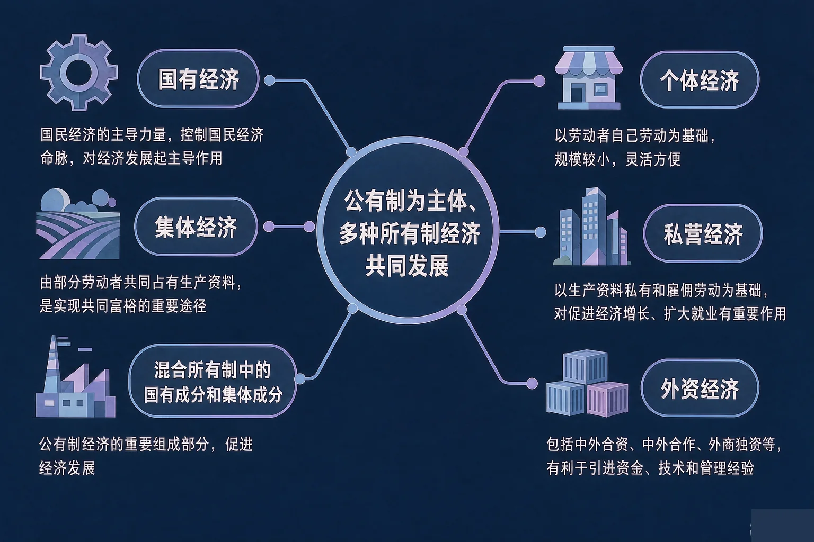
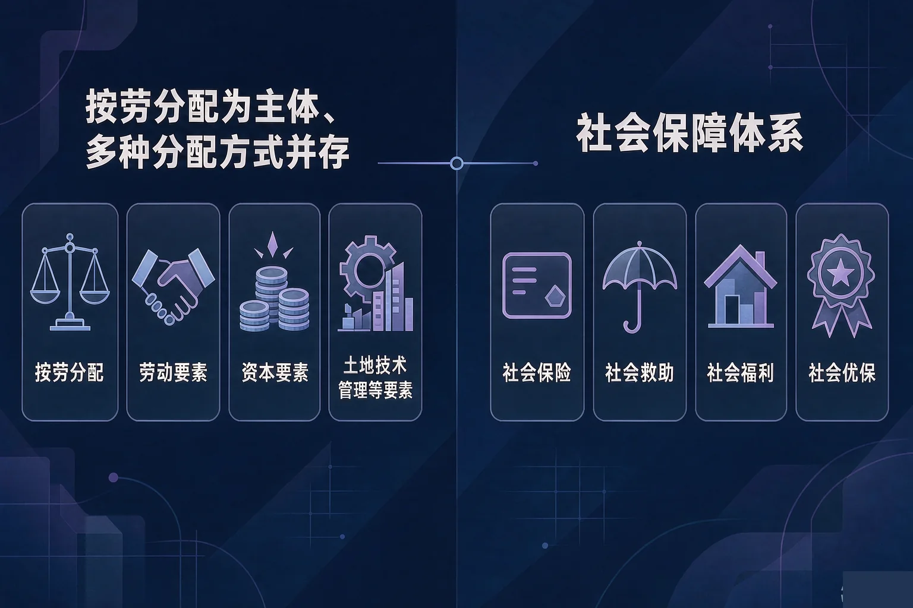

Gallery
v1.0.0 · skill v7.22.0
高中高一 · 经济与社会
我们脚下的经济地基，是由哪些制度一块一块打牢的？

选一个你真正想弄清的问题，后面的活动都会围着它转。
选择或输入后，这节课会围绕你的问题展开。
先凭直觉选一个，选完立刻看到解释——错了也没关系，正好知道要重点听哪里。
1. 我国基本经济制度包括三个方面。下面哪一组表述是准确的？
我国基本经济制度包括公有制为主体、多种所有制经济共同发展，按劳分配为主体、多种分配方式并存，社会主义市场经济体制三个方面。错因提醒：常见错误是把「按劳分配为主体」搞混成按需分配或平均分配，也有的同学误认为我国还实行计划经济体制。
2. 国有经济和非公有制经济在国民经济中的地位，下面哪一句表述准确？
国有经济是国民经济的主导力量，控制国民经济命脉，对经济发展起主导作用；非公有制经济是社会主义市场经济的重要组成部分，是我国经济社会发展的重要基础。错因提醒：把两种经济的地位搞混是这一课最高频的常见错误，记住一句话：主导力量说的是国有经济。
3. 关于「两个毫不动摇」，下面哪一句表述完整准确？
两个毫不动摇的完整表述是：毫不动摇巩固和发展公有制经济，毫不动摇鼓励、支持、引导非公有制经济发展。错因提醒：有的同学误认为发展一种所有制就要削弱另一种，这与我国基本经济制度的要求并不一致。
为什么要学这一课？
我们已经知道国家要发展经济、人民生活要改善（And）；但经济到底建立在什么样的制度之上，谁可以参与生产经营，这些事我们大多只有零散的印象（But）；所以这节课先把我国的基本经济制度一项一项看清（Therefore）。
我国基本经济制度包括三个方面
① 公有制为主体、多种所有制经济共同发展；② 按劳分配为主体、多种分配方式并存；③ 社会主义市场经济体制。
这节课先看第一项：公有制为主体、多种所有制经济共同发展的生产资料所有制。
公有制经济的构成
国有经济、集体经济，以及混合所有制经济中的国有成分和集体成分。
公有制主体地位的体现
公有资产在社会总资产中占优势；国有经济控制国民经济命脉，对经济发展起主导作用。

非公有制经济的地位与「两个毫不动摇」
非公有制经济是社会主义市场经济的重要组成部分，是我国经济社会发展的重要基础。必须毫不动摇巩固和发展公有制经济，毫不动摇鼓励、支持、引导非公有制经济发展。
有的同学误认为公有制经济就是国有经济；也有的同学把「混合所有制经济」一律当作非公有制经济搞混。其实集体经济和混合所有制经济中的国有成分、集体成分，同样属于公有制经济——判断的标准是这部分资本归谁所有。
🔍 深层理解 换个角度再看一遍这件事，看看能不能说出背后的原理。
看见它：地铁、电网、航天这样的领域，投入大、周期长、关系国家安全，需要国有经济挑大梁；而街边的餐馆、手机里的应用，则更多由个体、私营和外资经济来提供。
解释它：为什么两种所有制要共同发展？因为它们各自擅长的事不同：一个守住命脉和底线，一个激发活力和创新，合在一起才能把经济总量做大、把就业岗位做多。
迁移它：判断一种经济形式属于哪一类，不要看它名字里有没有「国」字，而要看这部分资本归谁所有——这条标准在任何情境里都管用。
先点一个经济主体，再判断它属于公有制经济还是非公有制经济。判断依据只有一条：这部分资本归谁所有。
先点上面一个经济主体。
为什么要弄清这一段？
我们已经知道谁可以参与生产经营（And）；但生产出来的成果怎么分到每个人手里，遇到生病、失业、年老又怎么办（But）；所以这节课要看清分配制度和社会保障制度（Therefore）。
我国实行按劳分配为主体、多种分配方式并存的分配制度，这是我国基本经济制度的第二项内容。

最高频的一个错误是误认为凡是「工资」都属于按劳分配。其实按劳分配只存在于公有制经济中；私营企业、外资企业职工的工资属于按生产要素分配中的劳动要素。也有同学把「收入怎么分配」和「生活怎么保障」搞混，把失业保险、医疗报销当成分配制度。
🔍 深层理解 换个角度再看一遍这件事，看看能不能说出背后的原理。
看见它：同样是一笔钱，来源可能完全不同：岗位工资来自劳动，存款利息来自资本，土地流转租金来自土地，技术入股分红来自技术。
拆开它：判断分配方式只要问两句话：这笔收入发生在公有制经济里吗？如果不是，它对应哪一种生产要素？两句话问完，答案基本就出来了。
解释它：为什么既要按劳分配、又要按要素分配？因为只有让各种生产要素都得到合理回报，才能把劳动、资本、技术、管理、数据的积极性都调动起来，把经济发展的蛋糕做大。
先点一个收入情境，再判断这笔收入属于按劳分配还是按生产要素分配中的哪一类要素。
先点上面一个收入情境。
情境：某校经济兴趣小组整理出五条表述。请你当一次校对员，判断哪几条准确、哪一条必须改，并说明依据。
新发展理念：五个方面各管什么
创新是引领发展的第一动力；协调是持续健康发展的内在要求；绿色是永续发展的必要条件；开放是国家繁荣发展的必由之路；共享是中国特色社会主义的本质要求。
社会主义市场经济体制的鲜明特征
社会主义市场经济体制既具有市场经济的共性，又具有自己鲜明的特征：坚持中国共产党的领导，这是中国特色社会主义最本质的特征，也是社会主义市场经济体制的重要特征；以公有制为主体，这是社会主义市场经济体制的根基；以共同富裕为根本目标，这是社会主义的本质要求。
最常见的两个错误：一是把国有经济和非公有制经济的地位搞混，误认为非公有制经济是国民经济的主导力量；二是把「市场决定作用」和「政府作用」搞混，误认为二者只能取其一。实际上要使市场在资源配置中起决定性作用，同时更好发挥政府作用。
先凭直觉选一个，选完立刻看到解释——错了也没关系，正好知道要重点听哪里。
1. 关于我国的生产资料所有制，下面哪一句表述准确？
我国实行公有制为主体、多种所有制经济共同发展的生产资料所有制。错因提醒：常见错误是把「主体」和「补充」的位置搞混，也有的同学误认为各种所有制经济的地位完全相同——公有制经济居于主体地位，这一点不能含糊。
2. 某私营企业职工按月领取计件工资。这笔收入属于：
按劳分配是社会主义的分配原则，只存在于公有制经济中；私营企业属于非公有制经济，这里职工的工资属于按生产要素分配中的劳动要素。错因提醒：这是全课最高频的常见错误——误认为凡「工资」都是按劳分配，忽略了按劳分配的适用范围。
3. 关于我国的社会保障，下面哪一句表述准确？
我国的社会保障体系主要包括社会保险、社会救助、社会福利、社会优抚，它是民生的安全网。错因提醒：容易出现两种搞混：一是把社会保障当成平均发放现金；二是把失业保险误认为属于分配制度——社会保障和收入分配是两件不同的事。
先点一个经济现象，再判断它主要对应我国经济生活中的哪一项制度或理念。五个都判断完，你就有了一张属于自己的经济地基卡。
先点上面一个经济现象。
把你的判断写下来：
从五个现象里挑一个你最有感触的，用自己的话写一写：它具体体现了哪一项制度或理念，为什么？
先凭直觉选一个，选完立刻看到解释——错了也没关系，正好知道要重点听哪里。
1. 某职工失业期间按规定领取失业保险金，这属于我国社会保障体系中的：
我国的社会保障体系主要包括社会保险、社会救助、社会福利、社会优抚，其中社会保险是核心内容，失业保险属于社会保险。错因提醒：容易把社会保障与分配制度搞混——失业保险不是按劳分配，而是社会保障提供的民生保障。
2. 某地把燃煤发电改为光伏发电，同时推动城乡区域协调发展。这最直接体现了：
绿色是永续发展的必要条件，协调是持续健康发展的内在要求，二者都属于新发展理念的内容。错因提醒：常见错误是误认为绿色发展只是技术问题，其实它首先是一条发展理念，回答的是「实现什么样的发展、怎样发展」。
3. 关于「两个毫不动摇」，下面哪一句表述完整准确？
两个毫不动摇的完整表述是：毫不动摇巩固和发展公有制经济，毫不动摇鼓励、支持、引导非公有制经济发展。错因提醒：有的同学误认为两种所有制此消彼长，这与我国基本经济制度的要求并不一致。公有制经济和非公有制经济都是社会主义市场经济的重要组成部分，共同推动我国经济社会发展。
一句口诀：公为主体多种共发展，两个毫不动摇记心间；按劳分配主体在公有，要素贡献也要算；市场决定政府更好办，五大理念高质量；社保四类守底线，共同富裕是答案。
给别人讲一遍：请用「基本经济制度」「按劳分配」「新发展理念」这三个词，给家里人讲清楚：我们脚下的经济地基是怎么打牢的，它和我们每个人的生活有什么关系。
再动一动手：记一记家里这个月的三笔收入，分别写清它属于哪一类分配方式，连同你的分析一起写进本子里。
三层练习，做完第一、二层就算通关；第三层留给愿意继续探索的同学。
⭐ 基础巩固（必做）
⭐⭐ 能力应用（必做）
⭐⭐⭐ 迁移挑战（选做）
左边是学它之前要先会的，右边是学会之后可以继续探索的，下面是同一领域的伙伴知识。
图谱正在加载：首次进入需下载知识索引（约 1–3 秒），加载完成后本行会自动消失。